/* sondra-perry - proofs */
11 plates. Deterministic overlays rendered by the composition-analysis skill.
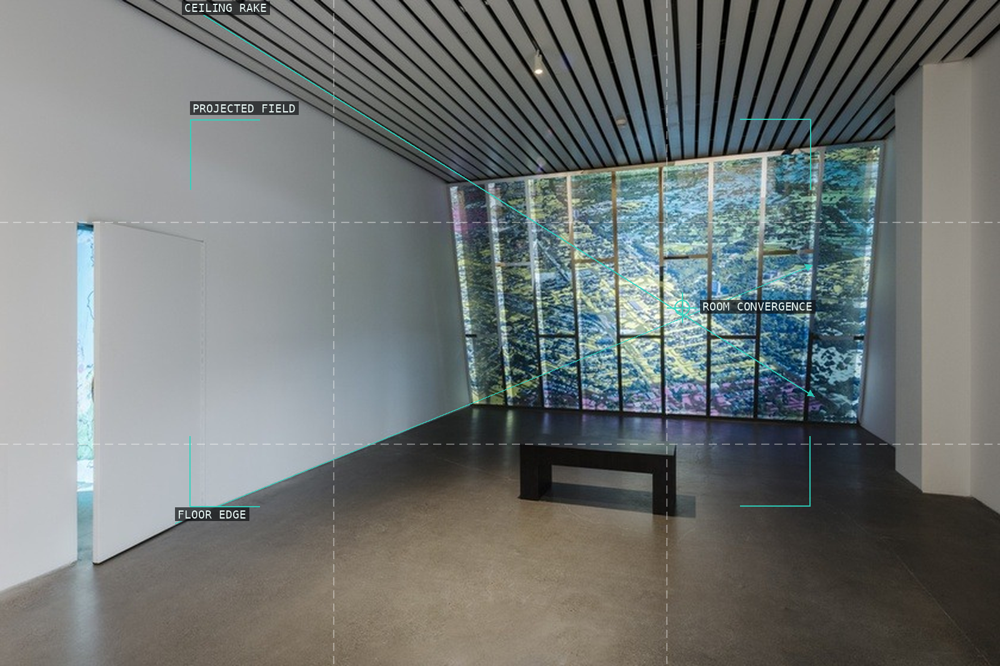
01-a-terrible-thing
The gallery shell turns the paired image display into a deep, converging field.
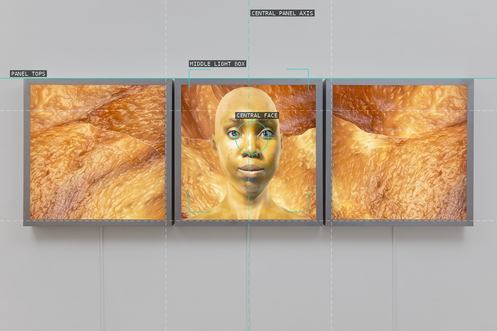
02-flesh-graft-ash-1
A centred face is held in a measured rhythm of three lit panels.
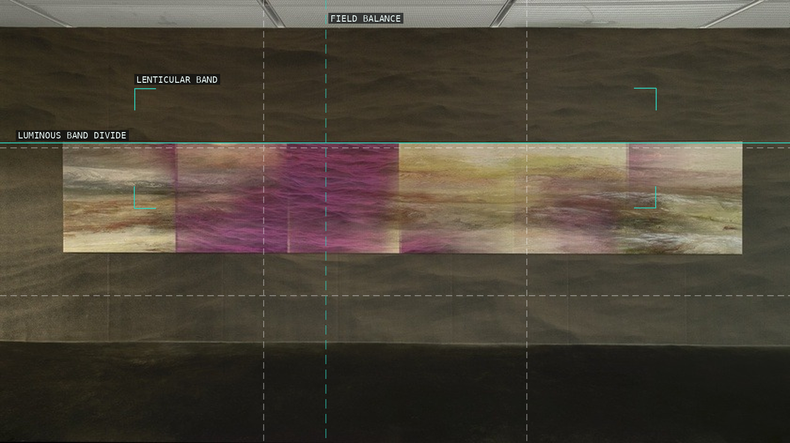
03-ocean-modifier
The long illuminated strip distributes attention laterally across a dark gallery field.
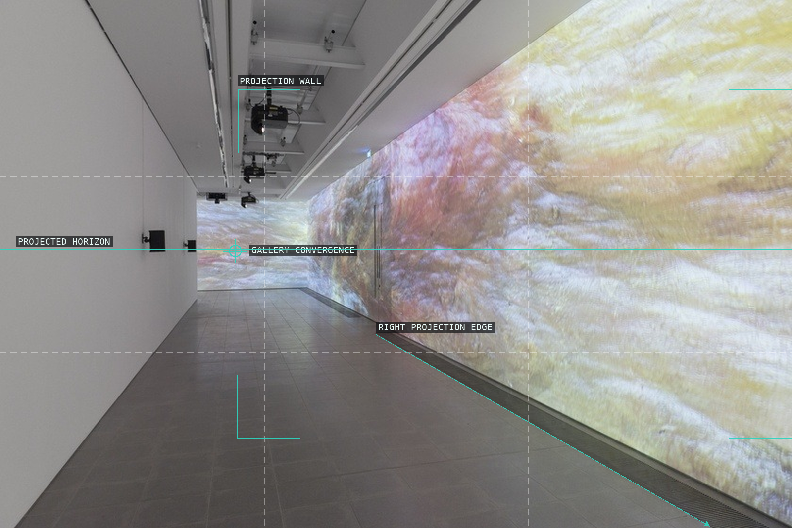
04-typhoon-coming-on
A receding gallery corridor makes the projection feel engulfing rather than screen-bound.
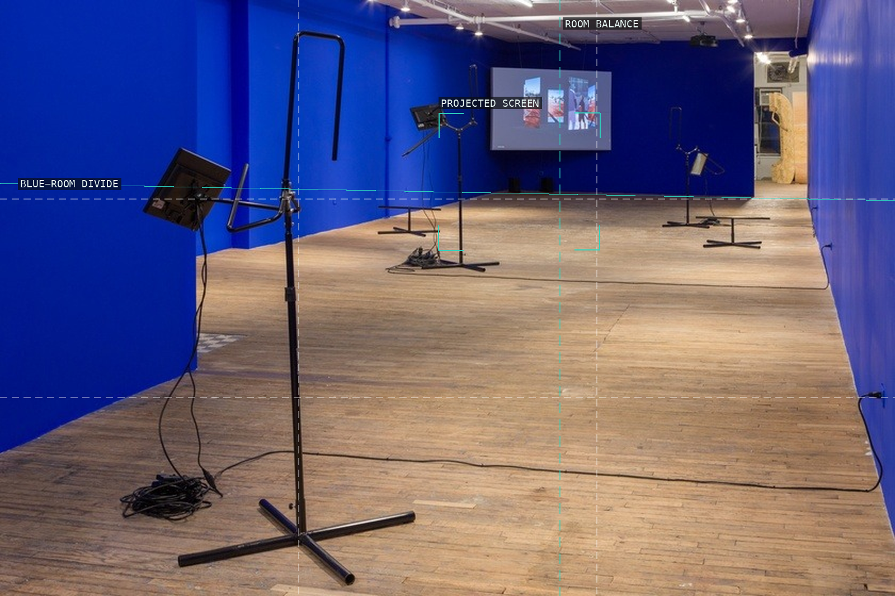
05-its-in-the-game
Chroma-key blue absorbs wall and display while apparatus interrupts the open floor.
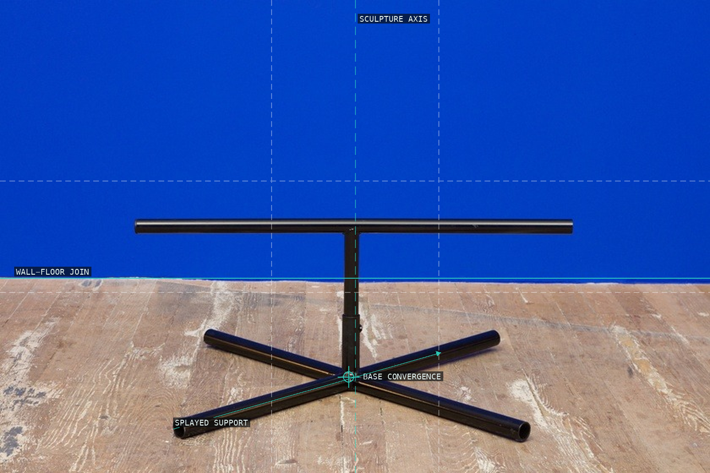
06-title-tk-2
The isolated monitor and support legs make utility equipment read as a centred figure.
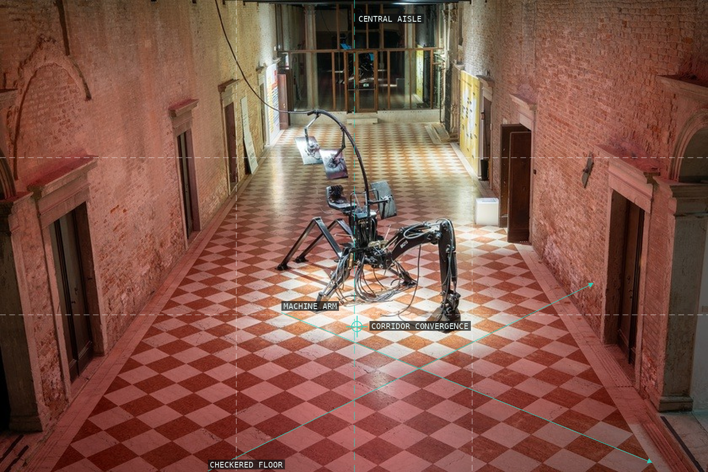
07-eclogue-inhabitability
Floor perspective and a machine arm pull an industrial viewing apparatus into the corridor’s depth.
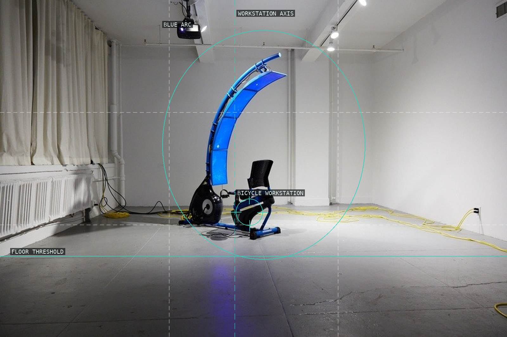
08-ffff-four
A blue arc encloses the bicycle workstation, joining bodily labour to the display field.
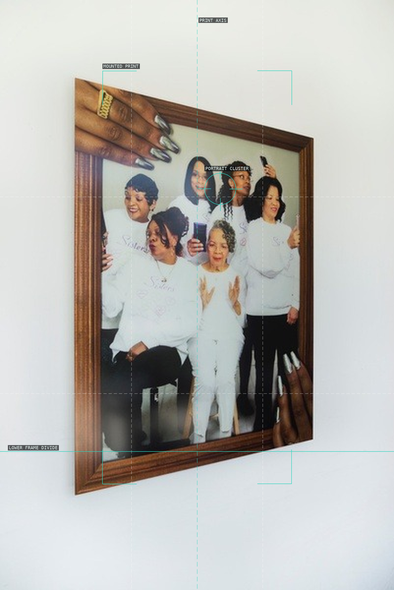
09-acrylic-gel-full-set
The wall-mounted print frames a portrait cluster within a field of white surround.
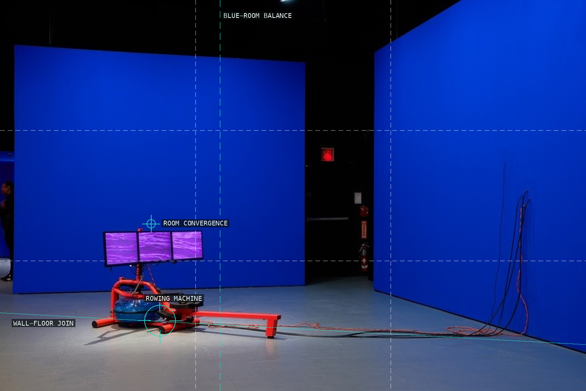
10-wet-and-wavy-looks
The red rowing machine punctures a nearly monochrome blue room and directs the eye toward its screens.
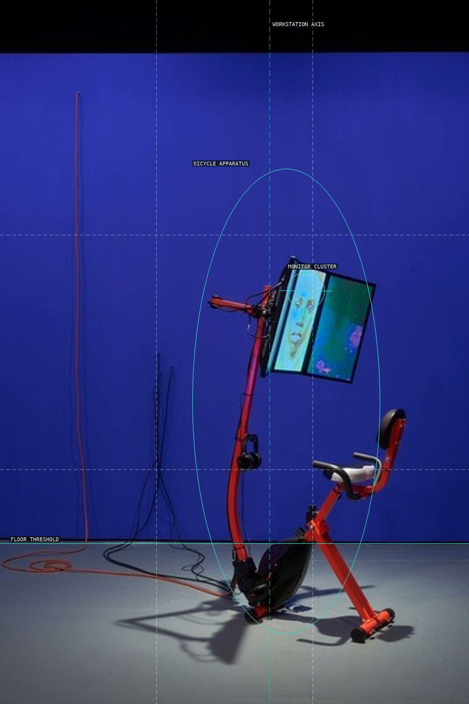
11-graft-and-ash
A vertical workstation binds bicycle, body-scale apparatus, and three screens into one loop.